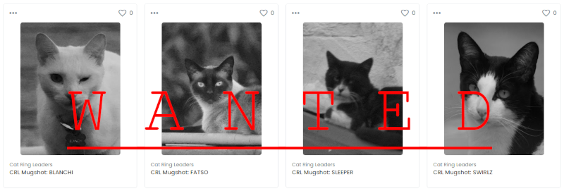

### CAT RING LEADERS #################################################################################
### MUGSHOTS
This project is the outcome of a 4 year investigation, during which I was able to capture several shots of the 4 ring leaders of the infamous cat fighting gangs that have taken over the roofs around my bunker.
More than a thousand nights of hellish screams still haunt my dreams.
Over the course of the investigation I've built a dossier on these ruthless Cats.
This series consists of the initial release containing the 4 mugshots of the known Cat Ring Leaders:
BLANCHI, FATSO, SLEEPER & SWIRLZ.
Further collateral will be released, including full body shots and a suite of spectral analyses.
### TECH
All shots during this investigation were taken using the USSR made MAKSUTOV MTO-500MM F8 mirror telephoto manual lens, a famous 1958 Brussels Grand Prix winner lens used by the KGB during the Cold War for espionage operations. It has since travelled 3 continents and over 9000km to make its way here, to bear witness to these vicious Cats.
The grainy nature of a state of the art 1950's manual long distance telephoto lens can be appreciated. Those well versed in the subject can also observe the compression of a very long distance focal range and the artifacts of the mirror lens technology in the bokeh and "restless" blur of the out of focus areas.
### WARNING ##########################################################################################
These shots were taken from a very safe distance and using proper technology and safety procedures. If you happen to cross paths with any of of these deviant Cats, be advised to mantain a safe distance and avoid meeting their gaze.
I am hereby releasing these mugshots to spread awareness: these Cats are on the loose. I believe the public can not sleep safe again until these Cats are brought to justice, and made to pay the gas.
You are specially advised to stay away from BLANCHI.
### NFTs
These NFTs include:
> A Cat Ring Leader MUGSHOT (1200x1600).
> 100% claiming rights to the rewards resulting of the capture of these criminals.
> Download access to the original unedited RAW files (6000x3376), for further
memetic research & production.
NOTE: claiming rewards for the capture of these criminals may or may not work 100% correctly 40% of the times. The photographer is not responsible for absent rewards or any legal "misnomer".
### AUTHOR
Please establish contact for further inquiries.
0xcA70
0xcA70a89f14905504e185b588c06a25D7e32E0022